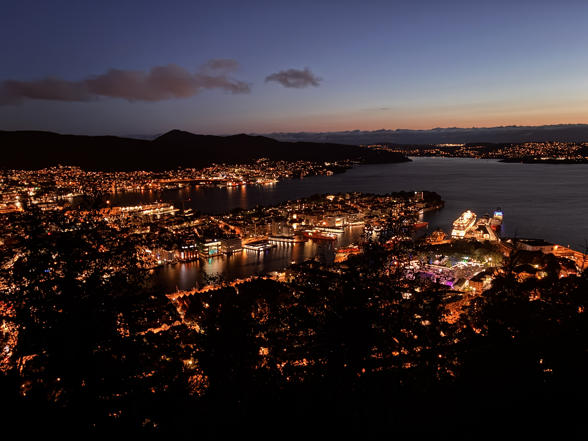

Right next to the polar circle
Something will go wrong, that's the purpose
It always begins with a bit of fortune
With this one I got lucky. And maybe, just maybe broke the rules.
I had two passes for Eurail. One is going to be used on the jorney to Portugal and the other? God knows, maybe I will do a trip on my own
to find the Santa Claus during the christmas break.
I can't say I knew the guys, we've been out 2 times and they didn't fit into my box of reliable travel partners. But I got a message,
an invitation to Iceland to join them and we will manage the plan during the flight. I liked the idea, because compared to my role at that time,
managing the whole journey to Portugal, literally being a travel agency, this was relieving feeling. I took the boarding pass,
and then Bora Bora, let's pack.
I could never pay for this much baggage. Having three bags was luxus. One big backpack, camera and little backpack that is way more than you
need for 15 eays in train. Only downside was lenght of the prayers. You needed to pray for three bags to not get lost, stolen, broken,
but foremost that everything necessary is packed in them.
Martin and his dad started with tour de Trnava to pick us all up. I saw kisses and goodbyes as they were not going to see Jakub again, maybe
I coldn't really process it, I was living a few years on my own, independent and this summer I was home for a month, ten days before I was in
train from Paris to Viena something like before sunrise from the other side.
Airport hotel
Yes, we arrived at the airport early. I don't think I have ever arrived at any airport in reasonable time reserve. It was always time reserve to finish triology of the Lord of the Rings with all the pee pauses. Anyways, we split the tent to three parts, after long discussions we decided to not wrap our backpacks into the plastic foil, said bye to them as they were leaving on the belt and alors through the security check.You know the instagram promp, I was this years old when... So I was that years old when I learned that I can refill my water bottle after security check. Not that it would change anything before, but today it would be difficult without water.
We have priority, two baggages, this is the real luxury. We either slept or held our bladers from nervosity during the flight to Helsinky, I don't remember. When we got off, it was another planet from the start. A few photos chill at the terrace and now mandatory hygiene and sleep. We lay down near the gate, as a good homeless. Although there are people talking, more like screaming somehow we fall asleep. Others didn't have such a luck as me but I have slept the whole night. I had my jacket on but the morning cold made me wake up. I must say it was nice waking up to the sights of Finnish girls. Something to bite and another flight. The plane was our second bed, only thing I remember was free blueberry juice, best marketing strategy ever. After 3 hour figh which started at 7:20 we land in Iceland at 8. Thats the good thing about jetlag, you get much more of the day. Basically time travel, call us sassy group.
Our backpacks travelled back in time also, exactly to the time where there wasn't cover from tent on them and one sleeping mat. We did't give much shit, we will manage. And what is most important we need to get to Reykjavik. During the tranfer from the airport to suitable part of road, we grab pizza carton, write Reykjavik on it and hitchike for the first time in our lives. From the start this experience was different, The land and atmosphere feel totally different, infrastructure also and the land we are walking on, neither the rock nor the plants were something we have ever seen.
It wasn't even 10 minutes and we got a ride. American pair which just rented a car. They were on 4 day tour, walking through the island but now they were going for some culture to the city. It seemed like they make taxis for people with thumbs up on the side of the road often, but it was our first time, unforgetable how without hope can turn to the happy jumping in an instant. They drop us off at the church, in the centre of the city. Martin helps them put cat in reverse and after a quick stop by american grandpa for a photo we rush to explore.
I don't know how we kept up all the journey with the backpacks but back then in Reykjavik we werent prepared, we need to put them down. We found a website and then we are looking for the place. Fuck me if this place doesn't look like the last time we see our backpacks, kebab house. We do a few last photos of our backpacks, pray a bit and then let's explore enjoing the lightness in our bodies. I still feel like the Reykjavik is small town. We did zigzags through the streets, glass house opera. the first real stop. I have seen it in one documentary a while before the trip. It reminds you a bit about the glass in churches. Light was breaking and bending through the time and space, for a while I didn't know if I am outside or inside. Uderneath that light theatre, lava exposition and expensive toilets, I will rather shit my pants to pay that amount of money.
Now it's time for lunch, me after the France, I would eat anything, the most not ordinary sounding and disguisting. That was fish soup, but as we work as group, we settle for fries with toppings. 10€ + a creme brule donut. It was a good deal, pretty place and now we should look for something more. We walked and walked, bridges and fish places everywhere. Then cold parks, some DJ in the middle of the city where we just sit on the grass and listened. Reykjavik is one of those cities which you look at and feel like you are in a painting. Shame that half of the year it is covered underneath the black night blanket. I want to definitely come back, maybe even live there for a while. Big money, wonderful nature, pretty girls, cool sea breeze, but I would kill the drivers. I would want to see someone from there drive in Italy or Turkyie. That would be the punishemnt for their driving skills.
Okay we finished our sitting around in the city, we needed to pick up our backpacks and find a place to stay overnight. Camp it is. I wanted to play a bit of rebelion. I didn't want to pay, but the guys brough the good out in me and as a good citizens we paid quite a money. Walk about an hour through the city and we are here. It would be so easy to get in for free. But when we came to the rooms we understood what have we paid for. Common room was flodded by grapewine. DIY feeling, just wonderful. After a while there some reading we needed to go sleep. Showers smelled by sulfur, first time I understood how is the geothermal energy used. It was hot it was perfect. Now just lets hide in the tent because sun doesn't set here and tomorrow is the day, day when we will experience the Icelandic nature.